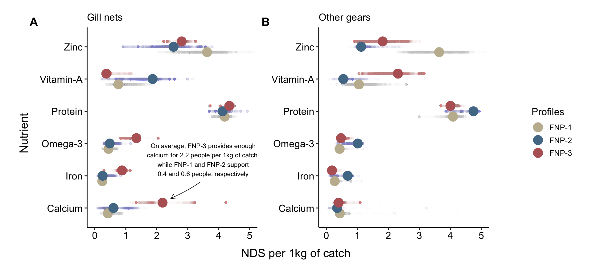
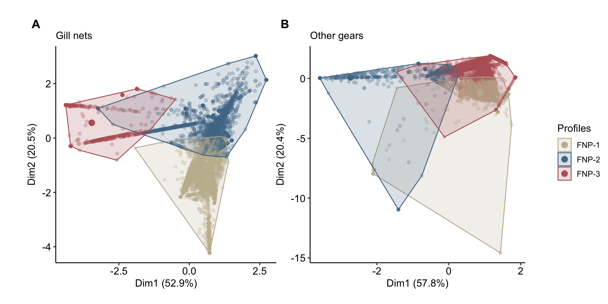
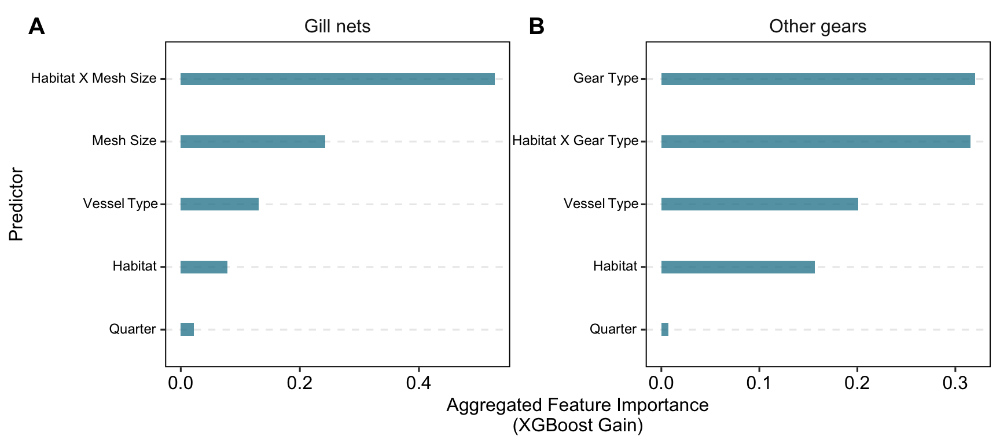
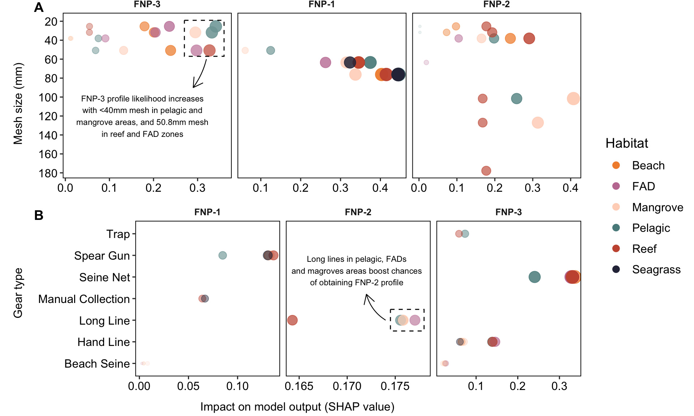

4 Nutritional profiles
Code
library(ggplot2)
data <- get_model_data()
data$data_raw$timor_GN_raw$clusters <- paste0("FNP-", data$data_raw$timor_GN_raw$clusters)
data$data_raw$timor_AG_raw$clusters <- paste0("FNP-", data$data_raw$timor_AG_raw$clusters)
plot_profiles <- function(x) {
means_dat <-
x %>%
dplyr::rename_with(~ stringr::str_to_title(.x), .cols = c(.data$zinc:.data$vitaminA)) %>%
dplyr::rename(
"Vitamin-A" = .data$Vitamina,
"Omega-3" = .data$Omega3
) %>%
tidyr::pivot_longer(c(Zinc:"Vitamin-A")) %>%
dplyr::group_by(clusters, name) %>%
dplyr::summarise(
mean = mean(value, na.rm = TRUE),
sd = sd(value, na.rm = TRUE),
n = dplyr::n(),
se = sd / sqrt(n),
ci_lower = mean - qt(0.99, df = n - 1) * se,
ci_upper = mean + qt(0.99, df = n - 1) * se
)
all_dat <-
x %>%
dplyr::rename_with(~ stringr::str_to_title(.x), .cols = c(.data$zinc:.data$vitaminA)) %>%
dplyr::rename(
"Vitamin-A" = .data$Vitamina,
"Omega-3" = .data$Omega3
) %>%
tidyr::pivot_longer(c(Zinc:"Vitamin-A"))
ggplot() +
ggpubr::theme_pubr()+
geom_jitter(data = all_dat, mapping = aes(x = value, y = name, color = clusters), alpha = 0.01, size = 1, position = position_dodge(width = 0.5)) +
geom_point(data = means_dat, mapping = aes(x = mean, y = name, color = clusters), size = 5, position = position_dodge(width = 0.5)) +
labs(
x = "",
y = "",
color = "Profiles"
) +
ggplot2::theme(
legend.position = "",
plot.margin = unit(c(0, 0, 0, 0), "cm"),
panel.grid = ggplot2::element_blank()
) +
coord_cartesian(xlim = c(0, 5)) +
scale_fill_manual(values = timor.nutrients::palettes$clusters_palette) +
scale_color_manual(values = timor.nutrients::palettes$clusters_palette)
}
plots1 <- plot_profiles(data$data_raw$timor_AG_raw) #purrr::map(data$data_raw$timor_AG_raw, plot_profiles)
means_dat <-
data$data_raw$timor_GN_raw %>%
dplyr::rename_with(~ stringr::str_to_title(.x), .cols = c(.data$zinc:.data$vitaminA)) %>%
dplyr::rename(
"Vitamin-A" = .data$Vitamina,
"Omega-3" = .data$Omega3
) %>%
tidyr::pivot_longer(c(Zinc:"Vitamin-A")) %>%
dplyr::group_by(clusters, name) %>%
dplyr::summarise(
mean = mean(value, na.rm = TRUE),
sd = sd(value, na.rm = TRUE),
n = dplyr::n(),
se = sd / sqrt(n),
ci_lower = mean - qt(0.99, df = n - 1) * se,
ci_upper = mean + qt(0.99, df = n - 1) * se
)
all_dat <-
data$data_raw$timor_GN_raw %>%
dplyr::rename_with(~ stringr::str_to_title(.x), .cols = c(.data$zinc:.data$vitaminA)) %>%
dplyr::rename(
"Vitamin-A" = .data$Vitamina,
"Omega-3" = .data$Omega3
) %>%
tidyr::pivot_longer(c(Zinc:"Vitamin-A"))
plots2 <-
ggplot() +
ggpubr::theme_pubr()+
geom_jitter(data = all_dat, mapping = aes(x = value, y = name, color = clusters), alpha = 0.01, size = 1, position = position_dodge(width = 0.5)) +
geom_point(data = means_dat, mapping = aes(x = mean, y = name, color = clusters), size = 5, position = position_dodge(width = 0.5)) +
labs(
x = "",
y = "",
color = "Profiles"
) +
ggplot2::theme(
legend.position = "",
plot.margin = unit(c(0, 0, 0, 0), "cm"),
panel.grid = ggplot2::element_blank()
) +
coord_cartesian(xlim = c(0, 5)) +
scale_fill_manual(values = timor.nutrients::palettes$clusters_palette) +
scale_color_manual(values = timor.nutrients::palettes$clusters_palette) +
annotate(
'text',
x = 3.5,
y = 2.5,
label = 'On average, FNP-3 provides enough\ncalcium for 2.2 people per 1kg of catch,\nwhile FNP-1 and FNP-2 support\n0.4 and 0.6 people, respectively',
size = 2.75
) +
#annotate(
# 'rect',
# xmin = 0,
# ymin = 0.5,
# ymax = 1.5,
# xmax = 4.5,
#alpha = 0.5,
# color = rgb(0, 0, 0, alpha = 0.85),
# linewidth = 0.3,
#fill = "transparent",
#linetype = 2
#) +
annotate(
'curve',
x = 3.4, # Play around with the coordinates until you're satisfied
y = 1.8,
yend = 1.3,
xend = 2.45,
col = 'black',
curvature = -0.05,
linewidth = 0.3,
arrow = arrow(length = unit(0.25, 'cm'))
)
plots <-
list(
plots2 + ggplot2::labs(subtitle = "Gill nets"),
plots1 + ggplot2::labs(subtitle = "Other gears")
)
legend_plot <- cowplot::get_legend(plots[[1]] +
ggplot2::theme(
legend.position = "right",
legend.key.size = ggplot2::unit(0.55, "cm"),
legend.title = ggplot2::element_text(size = 12)
))
combined_plots <- cowplot::plot_grid(plotlist = plots, ncol = 2, labels = "AUTO")
x_label <- cowplot::draw_label("NDS per 1kg of catch", x = 0.5, y = 0.05)
y_label <- cowplot::draw_label("Nutrient", x = 0.04, y = 0.5, angle = 90)
final_plot <-
cowplot::plot_grid(
combined_plots,
legend_plot,
ncol = 2,
rel_widths = c(1, 0.15),
scale = 0.9
) +
x_label +
y_label
final_plot
Code
kmean_plots <- data$kmeans_plots
plots <-
list(
kmean_plots$kmeans_timor_GN + ggplot2::labs(subtitle = "Gill nets"),
kmean_plots$kmeans_timor_AG + ggplot2::labs(subtitle = "Other gears")
)
plots <- lapply(plots, function(x) {
x +
ggpubr::theme_pubr()+
ggplot2::theme(
legend.position = "none",
plot.margin = unit(c(0, 0, 0, 0), "cm"),
panel.grid = ggplot2::element_blank()
) +
ggplot2::labs(
fill = "Profiles",
color = "Profiles"
)+
ggplot2::scale_color_manual(
values = timor.nutrients::palettes$clusters_palette,
labels = function(x) paste0("FNP-", x)
) +
ggplot2::scale_fill_manual(
values = timor.nutrients::palettes$clusters_palette,
labels = function(x) paste0("FNP-", x)
)
})
legend_plot <- cowplot::get_legend(plots[[1]] +
ggplot2::theme(
legend.position = "right",
legend.key.size = ggplot2::unit(0.6, "cm"),
legend.title = ggplot2::element_text(size = 12)
))
combined_plots <- cowplot::plot_grid(plotlist = plots, ncol = 2, labels = "AUTO")
# x_label <- cowplot::draw_label("False positive rate\n(1 - Specificity)", x = 0.5, y = 0.05)
# y_label <- cowplot::draw_label("True positive rate\n(Sensitivity)", x = 0.02, y = 0.5, angle = 90)
final_plot <-
cowplot::plot_grid(
combined_plots,
legend_plot,
ncol = 2,
rel_widths = c(1, 0.1),
scale = 0.9
)
final_plot
Code
timor.nutrients::perm_results %>%
dplyr::bind_rows(.id = "subset") %>%
dplyr::mutate(dplyr::across(c(SumOfSqs, R2, statistic), ~ round(.x, 2)),
p.value = ifelse(p.value <= 0.001, "< 0.001", p.value),
subset = stringr::str_remove(subset, "_perm"),
subset = stringr::str_replace(subset, "timor", "mainland")
) %>%
reactable::reactable(
theme = reactablefmtr::fivethirtyeight(centered = TRUE),
groupBy = "subset",
defaultExpanded = TRUE,
pagination = FALSE,
compact = FALSE,
borderless = FALSE,
striped = FALSE,
defaultColDef = reactable::colDef(
align = "center"
),
columns = list(
subset = reactable::colDef(
minWidth = 120
)
)
)Code
models_auc <-
timor.nutrients::model_outputs %>%
purrr::map(purrr::pluck(8)) %>%
dplyr::bind_rows(.id = "subset") %>%
dplyr::select(-estimator) %>%
tidyr::pivot_wider(names_from = subset, values_from = estimate)
plots <-
list(
timor.nutrients::model_outputs$model_timor_GN$roc_curves + ggplot2::labs(subtitle = paste0("Gill nets", " (", models_auc$model_timor_GN, ")")),
timor.nutrients::model_outputs$model_timor_AG$roc_curves + ggplot2::labs(subtitle = paste0("Other gears", " (", models_auc$model_timor_AG, ")"))
)
plots <- lapply(plots, function(x) {
x +
ggpubr::theme_pubr()+
ggplot2::theme(
panel.grid = ggplot2::element_blank(),
legend.position = "none",
plot.margin = unit(c(0, 0, 0, -0.1), "cm")
) +
ggplot2::coord_cartesian(expand = T) +
ggplot2::labs(x = "", y = "", color = "Profiles")+
ggplot2::scale_color_manual(
values = timor.nutrients::palettes$clusters_palette,,
labels = function(x) paste0("FNP-", x)
) +
ggplot2::scale_fill_manual(
values = timor.nutrients::palettes$clusters_palette,,
labels = function(x) paste0("FNP-", x)
)
})
legend_plot <- cowplot::get_legend(plots[[1]] +
ggplot2::theme(
legend.position = "right",
legend.key.size = ggplot2::unit(0.8, "cm"),
legend.title = ggplot2::element_text(size = 12)
))
combined_plots <- cowplot::plot_grid(plotlist = plots, ncol = 2, labels = "AUTO", vjust = 0.2)
x_label <- cowplot::draw_label("False positive rate (1 - Specificity)", x = 0.5, y = 0.05)
y_label <- cowplot::draw_label("True positive rate (Sensitivity)", x = 0.02, y = 0.5, angle = 90)
final_plot <-
cowplot::plot_grid(
combined_plots,
legend_plot,
ncol = 2,
rel_widths = c(1, 0.15),
scale = 0.9
) +
x_label +
y_label
final_plot
Code
models_metrics <-
timor.nutrients::model_outputs %>%
purrr::map(purrr::pluck(4)) %>%
purrr::imap(~ summary(.x)) %>%
dplyr::bind_rows(.id = "subset") %>%
dplyr::select(-.estimator) %>%
tidyr::pivot_wider(names_from = subset, values_from = .estimate) %>%
dplyr::rename(metric = .metric) %>%
na.omit()
dplyr::bind_rows(models_auc, models_metrics) %>%
dplyr::rename(
"Other gears" = model_timor_AG,
"Gill nets" = model_timor_GN
) %>%
dplyr::mutate(dplyr::across(.cols = dplyr::where(is.numeric), ~ round(.x, 2))) %>%
reactable::reactable(
theme = reactablefmtr::fivethirtyeight(centered = TRUE),
defaultExpanded = TRUE,
pagination = FALSE,
compact = FALSE,
borderless = FALSE,
striped = FALSE,
defaultColDef = reactable::colDef(
align = "center"
),
columns = list(
metric = reactable::colDef(
minWidth = 120
)
)
)Code
importance_ag <-
model_outputs$model_timor_AG$fit %>%
workflows::extract_fit_parsnip() %>%
vip::vi() %>%
dplyr::mutate(
category = dplyr::case_when(
stringr::str_detect(Variable, "gear_type") ~ "gear_type",
stringr::str_detect(Variable, "habitat_gear") ~ "habitat_gear",
stringr::str_detect(Variable, "habitat") ~ "habitat",
stringr::str_detect(Variable, "quarter") ~ "quarter",
stringr::str_detect(Variable, "vessel_type") ~ "vessel_type",
TRUE ~ "other"
)
) %>%
dplyr::group_by(category) %>%
dplyr::summarize(Aggregated_Importance = sum(Importance)) %>%
dplyr::arrange(dplyr::desc(Aggregated_Importance))
importance_gn <-
model_outputs$model_timor_GN$fit %>%
workflows::extract_fit_parsnip() %>%
vip::vi() %>%
dplyr::mutate(
category = dplyr::case_when(
stringr::str_detect(Variable, "mesh_size") ~ "mesh_size",
stringr::str_detect(Variable, "habitat_mesh") ~ "habitat_mesh",
stringr::str_detect(Variable, "habitat") ~ "habitat",
stringr::str_detect(Variable, "quarter") ~ "quarter",
stringr::str_detect(Variable, "vessel_type") ~ "vessel_type",
TRUE ~ "other"
)
) %>%
dplyr::group_by(category) %>%
dplyr::summarize(Aggregated_Importance = sum(Importance)) %>%
dplyr::arrange(dplyr::desc(Aggregated_Importance))
importance_plot <-
dplyr::bind_rows(
importance_ag %>% dplyr::mutate(model = "Other gears"),
importance_gn %>% dplyr::mutate(model = "Gill nets")
) %>%
dplyr::mutate(category = dplyr::case_when(category == "habitat_gear" ~ "habitat x gear type",
category == "habitat_mesh" ~ "habitat x mesh size",
TRUE ~ category),
category = stringr::str_replace(category, "_", " "),
category = stringr::str_to_title(category)
) %>%
ggplot(aes(x = reorder(category, Aggregated_Importance), y = Aggregated_Importance)) +
ggpubr::theme_pubr(border = TRUE) +
facet_wrap(~model, scales = "free") +
geom_col(width = 0.2, fill = "#1c8097", alpha = 0.75) +
coord_flip() +
labs(
x = "Predictor",
y = "Aggregated Feature Importance\n(XGBoost Gain)"
) +
theme(
panel.grid.major.y = element_line(linetype = "dashed"),
strip.background = ggplot2::element_blank(),
strip.text = element_text(size = 12),
axis.text.y = ggtext::element_markdown(size = 9),
panel.spacing = unit(0.1, "lines"),
)
cowplot::ggdraw(importance_plot) +
cowplot::draw_plot_label(
label = c("A", "B"),
x = c(0.02, 0.52), # Adjust the x position of labels
y = c(0.98, 0.98), # Adjust the y position of labels
size = 15
)
Code
sha_Mgn <- shapviz::shapviz(timor.nutrients::shap_results$model_timor_GN)
annotation_data <- data.frame(
profile = "FNP-3",
x = 0.175,
y = 120,
label = 'FNP-3 profile likelihood increases\nwith <40mm mesh in pelagic and\nmangrove areas, and 50.8mm mesh\nin reef and FAD zones'
)
p2 <-
sha_Mgn %>%
purrr::map(get_shaps, model_type = "gn") %>%
dplyr::bind_rows(.id = "profile") %>%
dplyr::mutate(profile = stringr::str_replace(profile, ".pred_", "FNP-")) %>%
dplyr::group_by(profile, habitat_fact, mesh_fact) %>%
dplyr::summarise(mesh_shap = median(mesh_shap, na.rm = TRUE)) %>%
dplyr::ungroup() %>%
dplyr::filter(mesh_shap > 0) %>%
dplyr::mutate(habitat_fact = dplyr::case_when(habitat_fact == "Deep" ~ "Pelagic", TRUE ~ habitat_fact)) %>%
ggplot2::ggplot(ggplot2::aes(mesh_shap, mesh_fact, color = habitat_fact)) +
facet_grid(. ~ factor(profile, levels = c("FNP-3", "FNP-1", "FNP-2")), scales = "free") +
ggplot2::geom_point(ggplot2::aes(alpha = sqrt(mesh_shap), size = mesh_shap)) +
ggpubr::theme_pubr(border = TRUE) +
ggplot2::scale_color_manual(values = c("#f28f3b", "#c27ba0", "#ffd5c2", "#588b8b", "#c8553d", "#2d3047", "#007ea7")) +
ggplot2::coord_cartesian(expand = TRUE) +
ggplot2::scale_y_reverse(n.breaks = 10) +
ggplot2::labs(color = "Habitat") +
ggplot2::theme(
panel.grid = ggplot2::element_blank(),
strip.background = ggplot2::element_blank(),
strip.text.x = ggplot2::element_text(face = "bold")
) +
ggplot2::guides(
color = ggplot2::guide_legend(override.aes = list(size = 3)),
alpha = "none",
size = "none"
) +
ggplot2::geom_text(
data = annotation_data,
aes(x = x, y = y, label = label),
size = 3,
fontface = "plain",
inherit.aes = FALSE
) +
ggplot2::geom_rect(
data = annotation_data,
aes(xmin = 0.27, xmax = 0.36, ymin = 19, ymax = 57),
fill = "white",
alpha = 0.2,
color = "black",
inherit.aes = FALSE,
linetype = "dashed"
) +
ggplot2::geom_curve(
data = annotation_data,
aes(x = 0.32, y = 60, xend = 0.29, yend = 90),
curvature = -0.1,
color = 'black',
linewidth = 0.4,
arrow = arrow(length = unit(0.4, 'cm')),
inherit.aes = FALSE
) +
ggplot2::labs(x = "", y = "")
leg <- cowplot::get_legend(p2 +
ggplot2::theme(
plot.margin = unit(c(2, 0, 0, 0.9), "cm"),
# legend.title = ggplot2::element_text(size = 11),
legend.position = "right",
legend.direction = "vertical",
legend.justification = "right",
legend.box.just = "right",
legend.background = element_rect(fill = "transparent", colour = NA),
legend.box.background = element_rect(fill = "transparent", colour = NA)
))
base_plot <-
cowplot::plot_grid(
p2 + theme(
legend.position = "none",
plot.margin = unit(c(-0.2, 0.5, 0, 0.9), "cm")
),
ncol = 1,
labels = c("A", "B"),
hjust = -3.5,
vjust = 1.2,
align = "v"
)
grid <-
cowplot::plot_grid(
base_plot,
nrow = 1
)
pp1 <-
cowplot::ggdraw() +
cowplot::draw_plot(grid) +
cowplot::draw_label("Mesh size (mm)", x = 0.03, y = 0.7, angle = 90, hjust = 1, size = 12)
sha_Mag <- shapviz::shapviz(timor.nutrients::shap_results$model_timor_AG)
process_shap <-
sha_Mag %>%
purrr::map(get_shaps, model_type = "ag") %>%
dplyr::bind_rows(.id = "profile") %>%
tidyr::separate(habitat_gear_fact, into = c("habitat", "gear_fact"), sep = "_") %>%
dplyr::mutate(
gear_fact = stringr::str_to_title(gear_fact),
profile = stringr::str_replace(profile, ".pred_", "FNP-"),
habitat_gear_fact = paste0(habitat, " x ", gear_fact),
habitat_gear_fact = stringr::str_replace(habitat_gear_fact, "Deep", "Pelagic")
)
to_group <-
process_shap %>%
dplyr::mutate(
zero_dist = 0 - abs(gear_fact_shap)
) %>%
dplyr::group_by(gear_fact) %>%
dplyr::summarise(zero_dist = mean(zero_dist)) %>%
dplyr::slice_max(order_by = zero_dist, n = 15) %>%
magrittr::extract2("gear_fact")
annotation_data <- data.frame(
profile = "FNP-2",
x = 0.171,
y = 5.3,
label = 'Long lines in pelagic, FADs\nand magroves areas boost chances\nof obtaining FNP-2 profile'
)
p2 <-
process_shap %>%
dplyr::mutate(gear_fact_shap = ifelse(gear_fact_shap %in% to_group, "Others", gear_fact_shap)) %>%
dplyr::group_by(profile, gear_fact, habitat_fact) %>%
dplyr::summarise(gear_fact_shap = median(gear_fact_shap, na.rm = TRUE)) %>%
dplyr::ungroup() %>%
dplyr::filter(gear_fact_shap > 0) %>%
dplyr::mutate(habitat_fact = dplyr::case_when(habitat_fact == "Deep" ~ "Pelagic", TRUE ~ habitat_fact)) %>%
ggplot2::ggplot(ggplot2::aes(gear_fact_shap, gear_fact, color = habitat_fact)) +
facet_grid(. ~ profile, scales = "free") +
ggplot2::geom_point(ggplot2::aes(alpha = sqrt(gear_fact_shap), size = gear_fact_shap)) +
ggpubr::theme_pubr(border = TRUE) +
ggplot2::scale_color_manual(values = c("#f28f3b", "#c27ba0", "#ffd5c2", "#588b8b", "#c8553d", "#2d3047", "#007ea7")) +
ggplot2::coord_cartesian(expand = TRUE) +
ggplot2::scale_x_continuous(n.breaks = 4) +
ggplot2::labs(color = "Habitat") +
ggplot2::theme(
panel.grid = ggplot2::element_blank(),
strip.background = ggplot2::element_blank(),
strip.text.x = ggplot2::element_text(face = "bold")
) +
ggplot2::geom_text(
data = annotation_data,
aes(x = x, y = y, label = label),
size = 3,
fontface = "plain",
inherit.aes = FALSE
) +
ggplot2::geom_curve(
data = annotation_data,
aes(x = 0.174, y = 3, xend = 0.172, yend = 4.2),
curvature = -0.2,
color = 'black',
linewidth = 0.4,
arrow = arrow(length = unit(0.4, 'cm')),
inherit.aes = FALSE
) +
ggplot2::geom_rect(
data = annotation_data,
aes(xmin = 0.1745, xmax = 0.178, ymin = 2.5, ymax = 3.5),
fill = "white",
alpha = 0.2,
color = "black",
inherit.aes = FALSE,
linetype = "dashed"
) +
ggplot2::guides(
color = ggplot2::guide_legend(override.aes = list(size = 3)),
alpha = "none",
size = "none"
) +
ggplot2::labs(x = "", y = "")
leg <- cowplot::get_legend(p2 +
ggplot2::theme(
plot.margin = unit(c(2, 0, 0, 0.9), "cm"),
# legend.title = ggplot2::element_text(size = 11),
legend.position = "right",
legend.direction = "vertical",
legend.justification = "right",
legend.box.just = "right",
legend.background = element_rect(fill = "transparent", colour = NA),
legend.box.background = element_rect(fill = "transparent", colour = NA)
))
base_plot <-
cowplot::plot_grid(
p2 + theme(
legend.position = "none",
plot.margin = unit(c(-0.2, 0.5, 0, 0.9), "cm")
),
ncol = 1,
labels = c("B", "D"),
hjust = -3.5,
vjust = 1.2,
align = "v"
)
grid <-
cowplot::plot_grid(
base_plot,
nrow = 1
)
pp2 <-
cowplot::ggdraw(ylim = c(-.05, NA)) +
cowplot::draw_plot(grid) +
cowplot::draw_label("Gear type", x = 0.03, y = 0.7, angle = 90, hjust = 1, size = 12) +
cowplot::draw_label("Impact on model output (SHAP value)", x = 0.5, y = 0, size = 12)
# Extract the shared legend with larger text and key sizes
shared_legend <- cowplot::get_legend(
p2 +
ggplot2::theme(
legend.position = "right", # Position the legend on the right
legend.direction = "vertical", # Vertical orientation
legend.justification = "center",
legend.box.just = "center",
legend.text = ggplot2::element_text(size = 12), # Increase text size
legend.title = ggplot2::element_text(size = 14), # Increase title size
legend.key.size = unit(1.5, "lines"), # Increase legend key size
legend.background = ggplot2::element_rect(fill = "transparent", colour = NA),
legend.box.background = ggplot2::element_rect(fill = "transparent", colour = NA)
)
)
# Remove legends from individual plots
pp1_no_legend <-
pp1 +
ggplot2::theme(legend.position = "none")
pp2_no_legend <-
pp2 +
ggplot2::theme(legend.position = "none")
# Combine the two plots vertically without legends
plots_combined <- cowplot::plot_grid(
pp1_no_legend,
pp2_no_legend,
align = "v", # Align the plots vertically
ncol = 1, # Stack in one column
rel_heights = c(1, 1) # Adjust heights if necessary
)
# Add the shared legend to the right
final_plot <- cowplot::plot_grid(
plots_combined,
shared_legend,
ncol = 2, # Add legend to the right of the plots
rel_widths = c(3, 0.5) # Adjust widths for the plots and legend
)
# Display the final plot
print(final_plot)